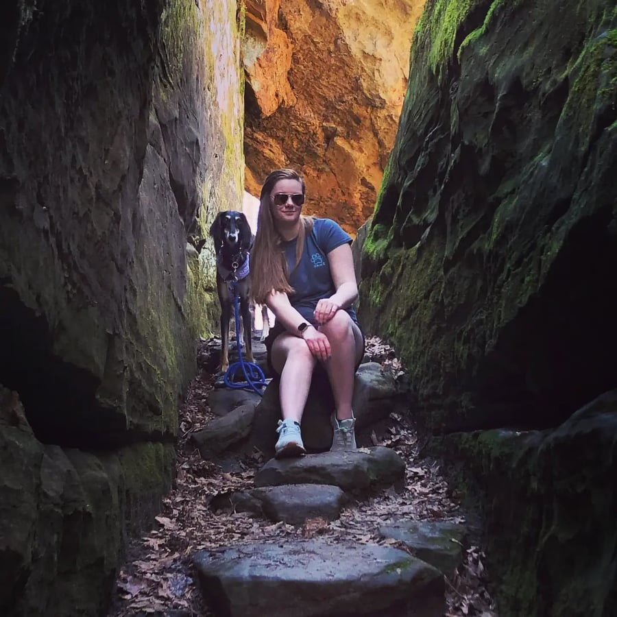

The topic of child neglect is not one to be taken lightly. The essay Vows Made In Wine explores the ways in which neglect specifically affects the adolescent characters in Lydia Millet's novel A Children's Bible. It does so by utilizing the critical perspectives of psychoanalytic theory, as well as by touching on the novel's main crisis of climate change.
The essay Hidden Figures: Women Telling a Dead Man's Story compares Lydia Millet's A Children's Bible to the musical Hamilton to display the similarities between Eve and Eliza Hamilton. Both of these women have devoted some portion of their lives to tell a loved one's story after they have died. While some may view Eve as the main character of Millet's novel, I point out that she in fact is not, and this story is instead about Jack and his journey.
A child's psychological development can be harmed in an instant if not treated carefully. Psychology for anyone can be affected by toxic families, early childhood traumas, and even changed to the environment. In Lydia Millet's A Children's Bible there are many examples of how many of the characters have experienced many different types of traumas. Utilizing the perspectives of psychoanalytic theory, the essay A Children's Bible on Childhood Trauma and Psychology focuses on how psychological development affects children throughout the novel.
The essay In God We Trust is about A Children's Bible by Lydia Millet, exploring religion as a whole and how different life experiences can affect how one views it. The essay examines bad parenting, trauma, and climate change, while digging deeper into its central thesis: the children in the novel do not have a strong belief system because of the harsh conditions they were raised in. The essay uses real world, fictional, and biblical examples to support this interpretation.
An Act of God: Religion and Climate Change in Lydia Millet's A Children's Bible explores the delicate interplay of religion and climate change woven throughout A Children's Bible. Using concepts from Marxist theory and Christian theology, this essay examines the ways in which religion colors characters' reactions and attitudes toward the climate disaster. By forming connections to similar texts, it posits that Christianity can be used as a tool to combat the climate crisis.
In Lydia Millet's A Children's Bible, the readers see the multiple traumatic events that the children and teens go through. The parents emotional neglect and the multiple natural disasters, caused by climate change, set a scene that have the characters navigate their way through the world making adult choices as children. The essay Traumatic Events in A Children's Bible explains how the traumatic experiences the characters endure may affect their choices as people through the story Millet tells.
Contributor Bios
Cristina Borunda was born in Chihuahua, Mexico. She has lived in Mexico for most of her life but also spent some years living in El Paso, Texas. She is currently a sophomore at Millikin University where she is part of the tennis team. She is working towards a double major in English Writing and Psychology. Her English major has a concentration in Journalism. Cristina plans on going to law school after college to be a human rights lawyer.
Jolie Henschen is a sophomore Secondary English Education major at Millikin University. She is part of the English Club and hopes eventually to join more student organizations in her remaining years at Millikin. She spends her free time reading, writing, watching an unhealthy amount of Netflix, and hanging out with family.

Carin Houser is a Secondary English Education major at Millikin University. She is also an editor and writer for our student-run newspaper, The Decurtarian. She is particularly proud of her recent articles on financial struggles at Millikin, on the troop withdrawals in Afghanistan, and on the circumstances surrounding a campus residence hall in quarantine. Carin is also an intern for the Illinois Medieval Association, a research-based association in the state of Illinois. Carin can be seen with her service dog Ata across campus and throughout the central Illinois community. After graduation in 2024, the duo plans to enter the teaching profession.
Hannah Lilly is a sophomore at Millikin university pursuing a Bachelor of Science in social psychology. After her time at Millikin she will attend graduate school for forensic psychology and law school. She strives to work herself all the way to the FBI, becoming a forensic psychologist for the federal government. She is fascinated with literature of all types, specifically historical fiction and crime novels. Her favorite historical novel is The Help by Kathryn Stockett.
Cadence Lopez is from Lake of the Ozarks Missouri. She is a Human Services major with a Dance minor. She is currently a freshman at Millikin University. Outside of class, Cadence is a part of the Sapphires Dance team, Millikin Treble Choir, and Big Blue Buddies.
Angela Millette is a freshman this year at Millikin University. She is an English Literature major and enjoys writing poetry, essays, and more. Angela is from a small rural town in southern Minnesota and graduated in 2021. She was in the newspaper in high school and found her love for writing her junior year. She loves to drive, coach, and play piano or ukulele in her free time.
Claire Reynolds is an English literature major from Macon, Illinois. She is proud to call herself a James Millikin Scholar and is grateful to have the opportunity to study at Millikin University. When not at school, Claire gives her time to her community, volunteering at her local community center in the winter and directing a day camp program for children in the summer. She enjoys watching horror movies and making collages. She would prefer not to provide any additional information, so as not to compromise her air of mystique.
Destiny Schlesinger is a sophomore Secondary English Education major who is also pursuing a Special Education endorsement at Millikin University. She is a part of the CARE Club and works as a waitress while at school. She enjoys being outside when at all possible. In her free time, Destiny loves to read and spend time with her friends and dog, Jax.
Dr. Tony R. Magagna is an Associate Professor and Chair of the English Department at Millikin University, specializing in modern and contemporary American literature. In addition to EN202: Writing About Literature, Dr. Magagna teaches a variety of literature courses, including classes on the modern American novel, contemporary American regionalism, modern American drama, and American popular culture. He has twice served as a Fulbright Lecturer in American Studies, both in Germany (2012-2013) and Japan (2018-2019). Over the last few years, Dr. Magagna has added a new dimension to his career, developing research and curricula focused on the intersections of interactive media and literature. You can find the website for his Digital Literatures course here.